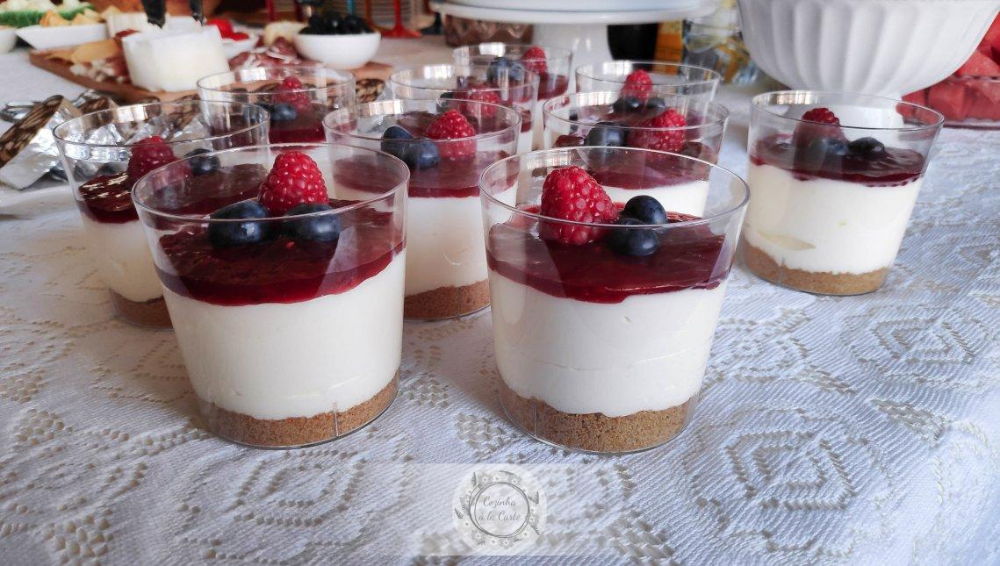

home
How to make cheesecake

Cheesecake is the ultimate dessert indulgence. It features a rich, velvety smooth cream cheese filling resting on a buttery, crunchy graham cracker crust. Perfectly balanced between sweet and subtly tangy, it is often crowned with a vibrant fruit compote or decadent chocolate sauce.
Equipment
- 9-inch springform pan
- Aluminum foil
- Large roasting pan
- Electric mixer
- Mixing bowls and rubber spatula
- Measuring cups and spoons
Ingredients
- 1.5 cups graham cracker crumbs (about 10-12 crackers, crushed)
- 1/4 cup granulated sugar
- 6 tablespoons unsalted butter, melted
- 32 oz (4 blocks) cream cheese, softened to room temperature
- 1 cup granulated sugar
- 1 cup sour cream, room temperature
- 1 teaspoon pure vanilla extract
- 4 large eggs, room temperature
Instructions
- Preheat your oven to 160°C (325°F).
- Mix the graham cracker crumbs, sugar, and melted butter together until it feels like wet sand.
- Press the mixture firmly into the bottom of your springform pan.
- Bake for 10 minutes, then remove from the oven and let it cool completely.